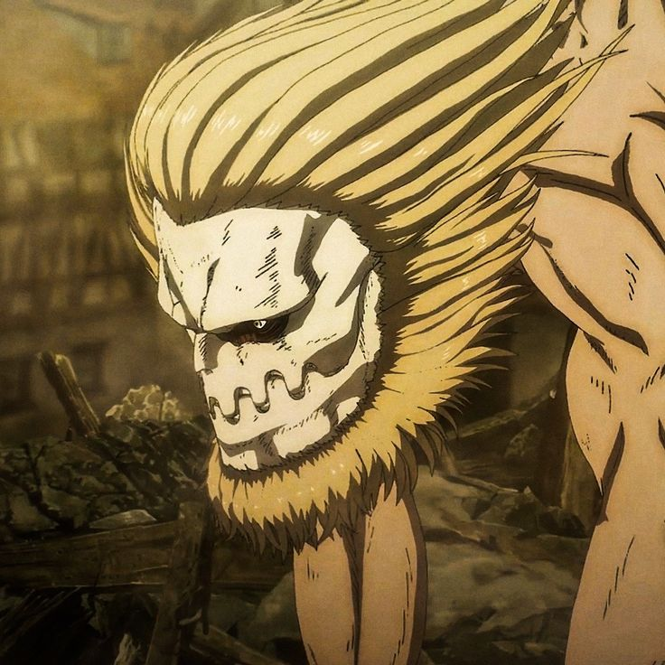

El Titán Mandíbula es uno de los nueve titanes cambiantes en Shingeki no Kyojin, conocido por su increíble velocidad y agilidad en combate.
Poseído por varios personajes a lo largo de la serie, incluyendo a Marcel Galliard y su hermano Porco Galliard, este titán destaca por su poderosa mandíbula y garras,
capaces de destrozar prácticamente cualquier material. Además de su fuerza destructiva, el Titán Mandíbula es extremadamente veloz,
lo que le permite atacar y retirarse rápidamente en el campo de batalla. A lo largo de la serie, su habilidad para romper defensas y su velocidad lo convierten en un
oponente formidable y una herramienta valiosa en las operaciones militares de Marley.
